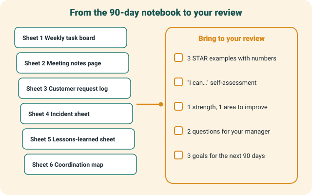

K7 · Self-directed learning and career development › Level 3 Secure
Review: prepare for your end-of-probation or 90-day review
This lesson completes Sheet 7: Review file. Print template. It reuses Tell a real example with STAR and Plan your first 90 days.
1. Objectives
- Choose 3 STAR examples with numbers from your 90-day notebook for your review.
- Write 1 strength, 1 area to improve and 3 measurable goals for the next 90 days.
2. Retrieval warm-up
Mixed questions from the whole course. Answer without looking, then open the answers.
- Which two questions is the priority matrix based on?
- What are the 3 boxes on a meeting notes page?
- What are the 4 steps for handling a customer request?
- How is a quick fix different from a root fix?
- What are the 4 review questions?
- What are the 3 parts of raising a disagreement?
Answers
- High or low impact; near or far deadline. See Lesson 1.
- Decisions; actions (who, what, when); open questions. See Lesson 2.
- Listen fully; confirm; option and time; follow up. See Lesson 3.
- A quick fix contains the damage now; a root fix stops it coming back. See Lesson 4.
- What did I plan; what actually happened; why was it different; what will I do next time. See Lesson 5.
- What you observed; your reason; a proposal to try. See Lesson 6.
3. Explanation
Many workplaces hold a review at the end of probation or after about 3 months. New people often arrive empty-handed and say "I think it's going fine". Managers find it hard to recognise what they cannot see.
The legal side. Probation length and how it ends are set by labour law, which differs by country. Check your contract and the law where you work. An example is given under Sources at the end of this part.

Prepare in 4 steps
- Gather evidenceGo through your 6 sheets; mark tasks with clear results.
- Choose 3 STAR examplesEach with numbers and a different skill.
- Assess yourselfRate the Level 2–3 "I can…" statements.
- Prepare questions and goals2 questions, 3 measurable goals.
How to choose examples. Prefer examples with numbers: "reported back on time for 9 of 10 requests", "label errors down from 41 to 0". Make one example about fixing a mistake. How you handled it shows more than a task that went smoothly.
Area to improve. Name a real one, with what you are doing about it. For example: "I still underestimate time by about 30%. I'm logging my real time each week to adjust."
Two questions for your manager. For example: "Which part of my work should I do better in the next 3 months?" Note the answer, then turn it into a goal.
Peer check. Before the review, ask a trusted friend or colleague to read Sheet 7. They point out anything still too vague.
Sources (example: Vietnam). Labour Code 2019, consolidated text 18/VBHN-VPQH of 12/02/2026: Article 25 sets maximum probation periods; Article 27(1) requires the employer to notify the result when probation ends. Checked 14/11/2026. An amending law is under consideration.
4. Workplace example
Hypothetical scenario. Amara has worked in customer service for nearly 60 days at an internet provider. Her end-of-probation review is next week.
Amara goes through her 6 sheets and chooses 3 examples:
- Sheet 3: reported back to customers on time for 46 of 50 requests in October.
- Sheet 4: found that 18 repeat calls came from modem restart instructions missing a step. She proposed fixing the script. The next month, those calls fell to 5.
- Sheet 5: once booked a technician for the wrong day. She reported it within 20 minutes and rebooked in time.
Area to improve: not yet confident with very angry customers, so she escalates quite early. Goal: sit in on 2 calls handled by the shift leader, then handle 5 cases herself with the shift leader beside her.
Why this works: The three examples use three different skills, all with numbers. The area to improve comes with a plan, so it easily becomes a shared goal with her manager.
5. Practice
Hypothetical scenario. You are a new purchasing assistant at a restaurant. Your 90-day notes include: switched vegetable suppliers, cutting spoiled stock from about 8% to 3%; took weekly meeting notes every week, and the head chef asked you to keep doing it; once under-ordered 10 kg of seafood for the weekend, and arranged a top-up within 2 hours. You often reply to suppliers slowly, sometimes the next day.
Write Sheet 7: 3 short examples, 1 strength, 1 area to improve, 2 questions, 3 goals.
Hint 1
Link each example to a different skill: problem solving, communication, handling a mistake.
Hint 2
A measurable goal has a number and a time frame, for example "reply within 4 working hours".
Model answer
- Example 1 (K3): switched vegetable suppliers; spoiled stock down from about 8% to 3%.
- Example 2 (K1, K2): took weekly meeting notes 12 out of 12 times; the head chef asked me to keep the task.
- Example 3 (K6): under-ordered 10 kg of seafood, reported it at once and arranged a top-up within 2 hours. Since then I check table bookings before confirming orders.
- Strength: finding causes and making proposals with data.
- Area to improve: slow replies to suppliers. I'm now setting 2 fixed times a day to read messages.
- Questions: "Next quarter, should I focus more on cutting costs or on steady quality?" "What should I learn so I can place weekend orders on my own?"
- Goals for the next 90 days: reply to suppliers within 4 working hours; keep spoiled stock under 4%; build a price comparison of 3 seafood suppliers before March.
(The figures are hypothetical.)
6. Self-check
Choose an answer. Every option has an explanation.
Question 1. Your manager asks: "What have you achieved in the last 90 days?" Which answer is best?
-
Not quite. There is no evidence, so your manager has nothing to recognise.
-
Correct. Correct. The example has a situation, an action and a result in numbers.
-
Not quite. Hours worked do not show the results you created.
Question 2. Which area to improve is presented well?
-
Not quite. It dodges the question and sounds like a boast. There is no concrete plan.
-
Correct. Correct. A real point, with a number, and what you are doing to improve.
-
Not quite. Everyone has something to improve. This makes the review less useful.
Question 3. Mixed review: two colleagues both give you urgent work with the same deadline. What do you do?
-
Correct. Correct. This is the method from Lesson 1. The person with authority decides the order.
-
Not quite. The order tasks arrive in says nothing about impact or deadline.
-
Not quite. Quality can drop, and nobody knows you are overloaded.
Question 4. Mixed review: after an incident, which action is a root fix?
-
Not quite. That is a quick fix. It is needed, but it does not stop a repeat.
-
Correct. Correct. It fixes the cause and includes a check. This is the method from Lesson 4.
-
Not quite. A warning does not change what makes the mistake easy to make.
Question 5. Mixed review: a customer asks to exchange an item, and you cannot approve it. What do you say?
-
Not quite. A promise beyond your authority may not be kept, which loses more trust.
-
Correct. Correct. An option within your authority, with a time to report back. This is the method from Lesson 3.
-
Not quite. The customer has to start again, and nobody follows it through.
7. Reflection
- Which example from your last 90 days are you proudest of? Do you have enough numbers to tell it?
- Which "I can…" statement did you rate lowest? Which lesson on this site would help you improve?
8. Real-world application
In the next 7 days, write Sheet 7 and ask someone to peer-check it. If no review is scheduled, ask your manager for 20 minutes to talk about your first 90 days. Afterwards, copy your 3 new goals into Plan your first 90 days. Set reminders to review the course after 7 and 30 days.
9. Metadata
| skill | K7 · Self-directed learning and career development |
|---|---|
| level | Level 3 · Secure |
| group | N3 |
| framework_map | WEF: Curiosity and lifelong learning; CSfW: 1a Manage career and work life; SkillsFuture CCS: Learning Agility; NACE: Career and Self-Development; LifeComp: L3 Managing learning (reference only) |
| original | Vietnamese version |
| updated | 2026-11-14 |
Finish the lesson
Mark it as done and the site suggests reviews after 1, 3 and 7 days. The data stays on your device only.
Suggested reviews: